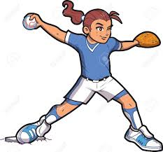

 El Softball originó en Chicago el día de Gracias, 1887. Un grupo de cerca de veinte jóvenes se reunieron en el gimnasio del club de botes de Farragut para oír el resultado del juego de Football de Harvard vs. Yale. Después de que la victoria de Yale fuera anunciada y las apuestas fueron pagadas, un hombre tomó un guante de boxeo perdido y lo lanzó en alguien, que lo golpeó con un poste. George Hancock, generalmente considerado el inventor del Softball, gritado, "Juguemos la bola!" Él ató el guante de boxeo de modo que se asemejara a una bola, marcó con tiza un diamante en el piso (dimensiones más pequeñas que los de un campo de béisbol para caber en el gimnasio) y rompiera un palo de la escoba para servir como bat. Lo que procedió era una versión más pequeña del béisbol. Ese juego ahora, 111 años más tarde, conocido como el primer juego de softball. El Softball pudo haber considerado su muerte en el día de su nacimiento si no hubiera sido por Hancock si no estuviera fascinado por el. En una semana, él creó una bola de gran tamaño y un palo caucho-inclinado de tamaño insuficiente y fue de nuevo al gimnasio a pintar líneas blancas permanentes en el piso. Después de que él escribiera nuevas reglas y nombrara el deporte Indoor Baseball, uno más organizado, con todo aún nuevo, el juego fue jugado. Su popularidad fue inmediata.